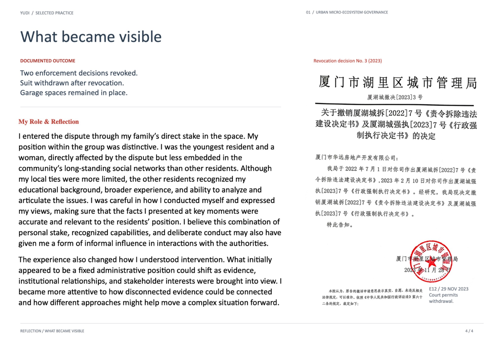

01 / COORDINATION · CIVIC SYSTEM
Urban Micro-Ecosystem Governance
How do different institutional interpretations of the same space shape a local dispute?
A municipal slope-safety project affected my family’s garage and fifteen other units. Families cleared spaces for the safety work. When removal and enforcement decisions followed, residents worked together across different records and procedures. I took part as a directly affected family member within that collective effort.
My contribution: Participation in the residents’ collective effort, careful factual communication, and retrospective analysis of how different records and procedures positioned the same space. — Xiamen, China · 2022–2023

A position built together
Residents discussed the changing status of the garages and drew on local knowledge, records, and relationships to maintain a shared position.
Other residents knew the community’s history and long-standing relationships.
Purchase, technical, and administrative materials gave the group different ways to describe the same space.
Residents and core organizers carried the discussion and their claims through successive procedures.


